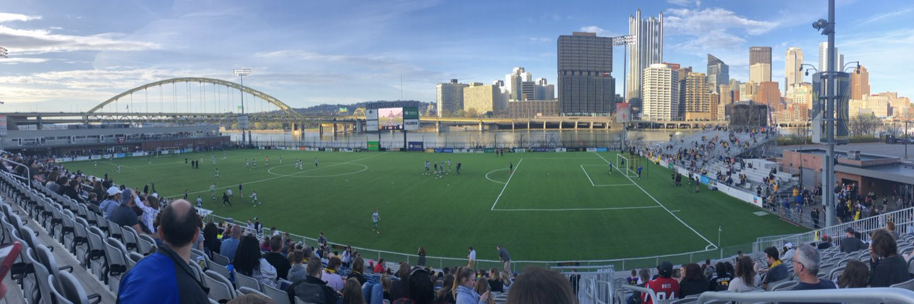

The Pittsburgh Riverhounds SC are a professional soccer team based in Pittsburgh, Pennsylvania. They compete in the USL Championship, which is the second tier of professional soccer in the United States. The Riverhounds have become an integral part of the city's sports landscape, known for their dedicated fanbase, commitment to developing local talent, and a growing reputation in American soccer.
The Pittsburgh Riverhounds SC were founded in 1998, with the team playing their inaugural season in 1999. They were originally a part of the A-League, which was the second division of U.S. soccer at the time. The team's early years were marked by financial instability and struggles on the field, but the Riverhounds began to build a loyal following in Pittsburgh.
The Riverhounds initially played at Bethel Park Stadium, but they faced financial challenges that limited their potential growth. Despite these obstacles, the team showed flashes of promise and quickly became a fixture in Pittsburgh's soccer scene.
The team’s fortunes began to change in 2013, when the Riverhounds moved into Highmark Stadium, a soccer-specific venue along the banks of the Monongahela River. Highmark Stadium, with its intimate setting and scenic views, quickly became a fan favorite, providing a home for the club to build on. The stadium's opening marked a turning point, as it gave the Riverhounds a stable foundation to grow their fanbase and develop as a club.
Over the next few years, the Riverhounds became a more competitive team in the USL, regularly making playoff appearances and attracting local talent. The team's success, both on and off the field, helped solidify their place in the Pittsburgh sports landscape.
The Riverhounds' recent years have been marked by solid performances in the USL Championship, with several playoff appearances. Under the leadership of head coach Bob Lilley, who took over in 2017, the team has developed a reputation for hard work, discipline, and a strong defensive style of play.
In 2019, the Riverhounds had one of their best seasons, finishing second in the Eastern Conference and making a deep run in the playoffs. The team continued to build on that success, regularly finishing in the top half of the standings and being a consistent playoff contender.
Throughout their history, the Riverhounds have had several standout players, including:
The Riverhounds have developed intense rivalries, particularly with Columbus Crew SC and FC Cincinnati. These rivalries have helped generate exciting and fiercely contested matchups, contributing to the club's identity. The local rivalry with FC Cincinnati was particularly heated in the USL, and the rivalry with Columbus Crew SC has continued as the Riverhounds’ prominence has grown.
The Pittsburgh Riverhounds have a strong commitment to the local community, regularly engaging in charitable initiatives and youth development. They operate a youth academy that provides a pathway for young players in the Pittsburgh area to develop their skills and potentially make the jump to professional soccer. The club is also involved in school partnerships, youth camps, and other initiatives designed to grow the game at the grassroots level in Pittsburgh.
The Riverhounds have also been heavily involved in promoting soccer within the Pittsburgh region, hosting clinics, and working with local organizations to increase access to the sport.
The Highmark Stadium is the home of the Riverhounds, and its unique location along the Monongahela River makes it one of the most scenic soccer venues in the country. The stadium offers stunning views of the Pittsburgh skyline, making it a prime spot for both soccer fans and those looking to enjoy a beautiful setting.
The club has a passionate and dedicated fan base known as the Steel Army, who support the team with chants, drums, and a lively atmosphere at every home game. The Steel Army is an integral part of the Riverhounds' success, helping to create an electric environment at Highmark Stadium.
The Riverhounds are focused on continuing to build a competitive team while also investing in their youth development system to ensure that the future of Pittsburgh soccer remains strong. With a commitment to developing homegrown talent, attracting top-tier players, and growing the game at the community level, the Riverhounds have a bright future ahead.
In 2024, the club announced the formation of the Pittsburgh Riveters SC, a women’s soccer team that will compete in the USL W League. This expansion will allow the Riverhounds organization to offer a full range of soccer opportunities, from men’s and women’s professional teams to youth development programs.
The Pittsburgh Riverhounds SC have carved out a significant place in Pittsburgh's sports culture, with a rich history, dedicated fan base, and a promising future. From their early days in the A-League to their current position as a prominent USL Championship team, the Riverhounds have been a beacon for soccer in Pittsburgh. With continued investment in their players, their community, and their facilities, the Riverhounds are poised to remain a cornerstone of the city's sports scene for years to come.